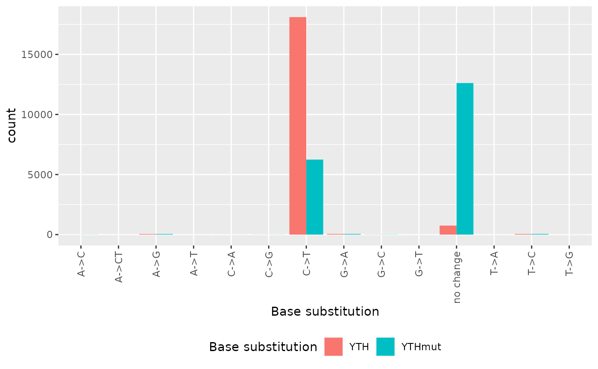
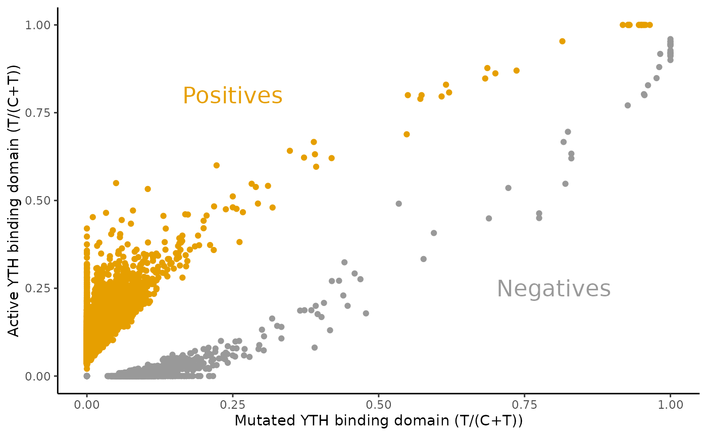

Analysis of DART-seq with JACUSA2helper
Christoph Dieterich, Michael Piechotta
2023-01-18
Source:vignettes/JACUSA2helper-dart-seq.Rmd
JACUSA2helper-dart-seq.RmdAn example on DARTseq
A complementary genetic approach is an extension of the TRIBE
technique called DART-seq Meyer (2019). Meyer
applied DART-seq on HEK293 cells where the APOBEC domain was fused to
the YTH domain from human YTHDF2 (WT and mutated). In essence, new
C-to-U editing events that are significantly enriched in the YTHDF2-WT,
but not in the binding domain mutant are bona fide candidates for m6A
RNA modification. JACUSA2helper supports the analysis of DARTseq data
too (see below). Input is typically read in via
read_result.
data("DARTseq")
filtered <- DARTseq
# calculate number of unique base calls per site
GenomicRanges::mcols(filtered)[["bc"]] <- lapply(filtered$bases, Reduce, f = "+") %>%
Reduce(f="+") %>%
base_count()
filtered <- filtered %>%
dplyr::filter(score >= 2) %>%
dplyr::filter(All(cov$cond1 >= 10) & All(cov$cond2 >= 10)) %>%
dplyr::filter(bc <= 2) %>%
dplyr::filter(robust(bases))The above code sequence filters the input to include only sites, which have a call-2 score higher than 2, a coverage across all replicates of at least 10. Moreover, the number of distinct base calls should be less or equal 2 (preferably C and U/T) and the base substitution should be visible in all replicates of at least one condition.
Some basic statistics on base transitions in the data
# sum base call counts of condition / RNA replicates
rna_bases <- Reduce("+", filtered$bases$cond2)
# we don't need lapply_repl, because we don't operate on all replicates from all
# conditions - only condition 2 / RNA
ref2YTHmut <- base_sub(rna_bases, filtered$ref)
table(ref2YTHmut)
#> ref2YTHmut
#> A->C A->G A->T C->A C->G C->T G->A G->C
#> 9 47 3 5 7 6243 51 12
#> G->T no change T->A T->C T->G
#> 3 12614 2 52 4
rnaref <- Reduce("+", filtered$bases$cond1)
ref2YTH <- base_sub(rnaref, filtered$ref)
table(ref2YTH, ref2YTHmut)
#> ref2YTHmut
#> ref2YTH A->C A->G A->T C->A C->G C->T G->A G->C G->T no change
#> A->C 5 0 0 0 0 0 0 0 0 0
#> A->CT 2 0 0 0 0 0 0 0 0 0
#> A->G 0 44 0 0 0 0 0 0 0 6
#> A->T 0 0 1 0 0 0 0 0 0 1
#> C->A 0 0 0 4 0 0 0 0 0 0
#> C->G 0 0 0 0 7 0 0 0 0 0
#> C->T 0 0 0 0 0 5526 0 0 0 12577
#> G->A 0 0 0 0 0 0 41 0 0 15
#> G->C 0 0 0 0 0 0 0 12 0 0
#> G->T 0 0 0 0 0 0 0 0 3 0
#> no change 2 3 2 1 0 717 10 0 0 0
#> T->A 0 0 0 0 0 0 0 0 0 1
#> T->C 0 0 0 0 0 0 0 0 0 14
#> T->G 0 0 0 0 0 0 0 0 0 0
#> ref2YTHmut
#> ref2YTH T->A T->C T->G
#> A->C 0 0 0
#> A->CT 0 0 0
#> A->G 0 0 0
#> A->T 0 0 0
#> C->A 0 0 0
#> C->G 0 0 0
#> C->T 0 0 0
#> G->A 0 0 0
#> G->C 0 0 0
#> G->T 0 0 0
#> no change 0 14 0
#> T->A 2 0 0
#> T->C 0 38 0
#> T->G 0 0 4The following bar plot summarizes the number of sites by characteristic base substitutions relative to the reference sequence. We observe a lot more C-to-U transitions in the active YTH binding domain as compared to the inactivated binding domain.
tidyr::tibble(
base_sub = c(ref2YTH, ref2YTHmut),
Source = c(
rep("YTH",length(ref2YTH)),
rep("YTHmut",length(ref2YTHmut)))
) %>% # ggplot requires a data frame
ggplot2::ggplot(ggplot2::aes(x = base_sub, fill = Source)) +
ggplot2::geom_bar(position = "dodge") +
ggplot2::xlab("Base substitution") +
ggplot2::scale_fill_discrete(name = "Base substitution") +
ggplot2::theme(
legend.position = "bottom",
axis.text.x = ggplot2::element_text(angle = 90, vjust = 0.5, hjust=1)
)
Quantitative assessment of T/(C+T) frequencies
tempo <- lapply_cond(
lapply_cond(filtered$bases, function(b) { Reduce("+", b) } ),
base_ratio
)
GenomicRanges::mcols(filtered)[["YTH.t.ratio"]] <- tempo$cond1$T
GenomicRanges::mcols(filtered)[["YTHmut.t.ratio"]] <- tempo$cond2$T
GenomicRanges::mcols(filtered)[["pred"]] <- ifelse(
tempo$cond1$T > tempo$cond2$T,
"Positives",
"Negatives"
)The following scatter plot summarizes the T/(C+T) frequencies and labels them.
GenomicRanges::mcols(filtered)[c("YTHmut.t.ratio", "YTH.t.ratio", "pred")] %>%
as.data.frame() %>%
ggplot2::ggplot(ggplot2::aes(x=YTHmut.t.ratio, y=YTH.t.ratio, color=pred)) +
ggplot2::geom_point() +
ggplot2::xlab("Mutated YTH binding domain (T/(C+T))") +
ggplot2::ylab("Active YTH binding domain (T/(C+T))") +
ggplot2::scale_color_manual(values=c('#999999', '#E69F00'), name = "") +
ggplot2::annotate(geom="text", x=0.8, y=0.25, label="Negatives", color="#999999", size=6) +
ggplot2::annotate(geom="text", x=0.25, y=0.8, label="Positives", color="#E69F00", size=6) +
ggplot2::theme_classic() +
ggplot2::theme(legend.position = "none")